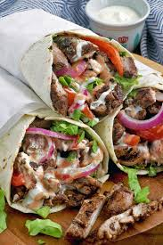

Shawarma Wrap

Nice and tight shawarma wrap
Originally from Lebanon it has become world wide.
Tender and juicy shawarma it is one the most rated foods
Some Ingredients of Sharwarma
- Plain yogurt
- Lemon juice
- White vinegar
- Olive oil
- Chopped onion
- Cloves garlic, minced
- Cumin
- Nutmeg
- Mace
- Lamb shouder
- Tortillas
Step by step guides of a good shawarma
-
- First step :
- Place the yogurt, water, lemon juice,
vinegar, olive oil, onion, and garlic into a large mixing bowl.
Whisk in the salt, black pepper, cumin, nutmeg, clove, mace, and cayenne pepper until evenly blended. Mix in the lamb strips to coat. Cover the bowl with plastic wrap,
and marinate in the refrigerator 12 to 24 hours (the longer the better).
-
- Second step :
- Heat a large skillet over high heat.
Cook the lamb strips in a single layer in batches until the fat
melts and the meat has browned and is no longer pink on the inside,
about 5 minutes, turning occasionally.